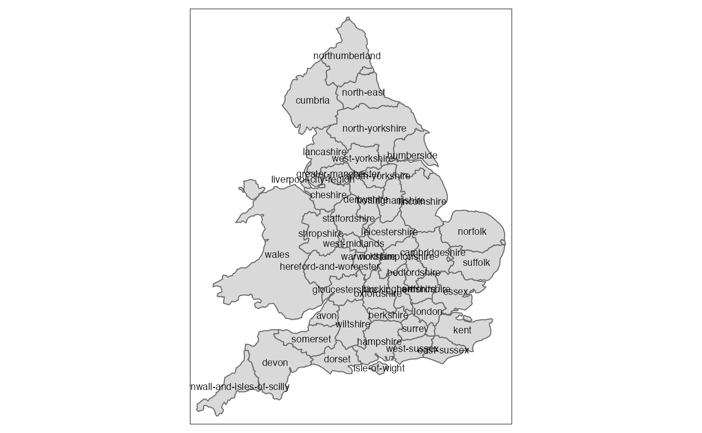
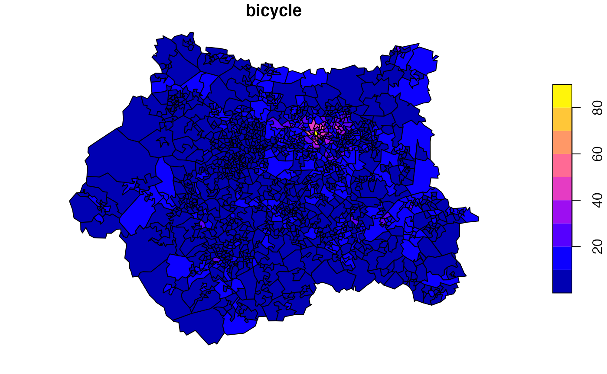

What modal shift to cycling do you think we could achieve in UK cities in an ideal scenario? Answers to that question are vital to support high level ambition for active transport and wider sustainability policies in settlements worldwide. In UK cities such as Leeds (where the motivation for this article originated, via Twitter) there is already a wealth of freely available data on cycling potential, based on the Propensity to Cycle Tool (PCT) project, of which this package is a part. This article will briefly explain how to get cycling potential data for any city in England and Wales, based on a case study of Leeds.
The first stage in many projects involving geographic data is to define the region of interest. In our case we will use the boundary of the Leeds local authority as the basis of analysis. The PCT is based on ‘PCT regions’ that we can visualise as follows:
library(pct)
library(sf)
library(dplyr)
library(tmap)
tm_shape(pct_regions) +
tm_polygons() +
tm_text("region_name", size = 0.6)
We are interested in Leeds in the west-yorkshire area. Using the pct package we can get zone data from the PCT as follows (note: this would work by setting region_of_interest to any of the regions shown in the map above:
region_of_interest = "west-yorkshire"
zones_region = get_pct_zones(region = region_of_interest)
# zones_region = get_pct_zones(region = region_of_interest, geography = "lsoa") # for smaller zones
names(zones_region)
#> [1] "geo_code" "geo_name"
#> [3] "lad11cd" "lad_name"
#> [5] "all" "bicycle"
#> [7] "foot" "car_driver"
#> [9] "car_passenger" "motorbike"
#> [11] "train_tube" "bus"
#> [13] "taxi_other" "govtarget_slc"
#> [15] "govtarget_sic" "govtarget_slw"
#> [17] "govtarget_siw" "govtarget_sld"
#> [19] "govtarget_sid" "govtarget_slp"
#> [21] "govtarget_sip" "govtarget_slm"
#> [23] "govtarget_sim" "govtarget_slpt"
#> [25] "govtarget_sipt" "govnearmkt_slc"
#> [27] "govnearmkt_sic" "govnearmkt_slw"
#> [29] "govnearmkt_siw" "govnearmkt_sld"
#> [31] "govnearmkt_sid" "govnearmkt_slp"
#> [33] "govnearmkt_sip" "govnearmkt_slm"
#> [35] "govnearmkt_sim" "govnearmkt_slpt"
#> [37] "govnearmkt_sipt" "gendereq_slc"
#> [39] "gendereq_sic" "gendereq_slw"
#> [41] "gendereq_siw" "gendereq_sld"
#> [43] "gendereq_sid" "gendereq_slp"
#> [45] "gendereq_sip" "gendereq_slm"
#> [47] "gendereq_sim" "gendereq_slpt"
#> [49] "gendereq_sipt" "dutch_slc"
#> [51] "dutch_sic" "dutch_slw"
#> [53] "dutch_siw" "dutch_sld"
#> [55] "dutch_sid" "dutch_slp"
#> [57] "dutch_sip" "dutch_slm"
#> [59] "dutch_sim" "dutch_slpt"
#> [61] "dutch_sipt" "ebike_slc"
#> [63] "ebike_sic" "ebike_slw"
#> [65] "ebike_siw" "ebike_sld"
#> [67] "ebike_sid" "ebike_slp"
#> [69] "ebike_sip" "ebike_slm"
#> [71] "ebike_sim" "ebike_slpt"
#> [73] "ebike_sipt" "base_slcyclehours"
#> [75] "govtarget_sicyclehours" "govnearmkt_sicyclehours"
#> [77] "gendereq_sicyclehours" "dutch_sicyclehours"
#> [79] "ebike_sicyclehours" "base_sldeath"
#> [81] "base_slyll" "base_slvalueyll"
#> [83] "base_slsickdays" "base_slvaluesick"
#> [85] "base_slvaluecomb" "govtarget_sideath"
#> [87] "govtarget_siyll" "govtarget_sivalueyll"
#> [89] "govtarget_sisickdays" "govtarget_sivaluesick"
#> [91] "govtarget_sivaluecomb" "govnearmkt_sideath"
#> [93] "govnearmkt_siyll" "govnearmkt_sivalueyll"
#> [95] "govnearmkt_sisickdays" "govnearmkt_sivaluesick"
#> [97] "govnearmkt_sivaluecomb" "gendereq_sideath"
#> [99] "gendereq_siyll" "gendereq_sivalueyll"
#> [101] "gendereq_sisickdays" "gendereq_sivaluesick"
#> [103] "gendereq_sivaluecomb" "dutch_sideath"
#> [105] "dutch_siyll" "dutch_sivalueyll"
#> [107] "dutch_sisickdays" "dutch_sivaluesick"
#> [109] "dutch_sivaluecomb" "ebike_sideath"
#> [111] "ebike_siyll" "ebike_sivalueyll"
#> [113] "ebike_sisickdays" "ebike_sivaluesick"
#> [115] "ebike_sivaluecomb" "base_slcarkm"
#> [117] "base_slco2" "govtarget_sicarkm"
#> [119] "govtarget_sico2" "govnearmkt_sicarkm"
#> [121] "govnearmkt_sico2" "gendereq_sicarkm"
#> [123] "gendereq_sico2" "dutch_sicarkm"
#> [125] "dutch_sico2" "ebike_sicarkm"
#> [127] "ebike_sico2" "perc_rf_dist_u10km"
#> [129] "avslope_perc_u10km" "geometry"
tm_shape(zones_region) +
tm_fill("bicycle", palette = "RdYlBu") +
tm_shape(pct_regions) +
tm_borders() +
tm_text("region_name")
This shows the number of people who say they cycled to work in the 2011 Census. This may have changed slightly as cycling becomes more popular in some places, but is a good proxy for current cycling levels. But there are two big problems with this: the map is of West Yorkshire not Leeds, and it’s showing current cycling rates, not future potential.
To generalise the analysis outlined above, we can download national data from the PCT project as follows:
zones_national = read_sf("https://github.com/npct/pct-outputs-national/raw/master/commute/msoa/z_all.geojson")A summary of cycling potential nationwide can then be calculated as follows:
national_commute_totals = zones_national %>%
st_drop_geometry() %>%
select(all, census_2011 = bicycle, govtarget_slc, dutch_slc) %>%
summarise_all(.funs = ~sum(.))
national_commute_percentages = national_commute_totals / national_commute_totals$all * 100| all | census_2011 | govtarget_slc | dutch_slc |
|---|---|---|---|
| 23903549 | 744459.0 | 1456131.9 | 4519209.3 |
| 100 | 3.1 | 6.1 | 18.9 |
We can calculate the mode share of cycling under these same scenarios for any area (e.g. the boundary of Greater London) or for a list of named local authorities, as follows:
r = read.csv(stringsAsFactors = FALSE, text = "area
Greater London
Greater Manchester
Birmingham
Leeds
Glasgow
Liverpool
Newcastle
Bristol
Cardiff
Belfast
Southampton
Sheffield
")
matching_las = pct_regions_lookup$lad16nm[pct_regions_lookup$lad16nm %in% r$area]
matching_regions = c("london", "greater-manchester")
pct_lookup = pct_regions_lookup %>%
rename(lad_name = lad16nm)
zones_national = inner_join(zones_national, pct_lookup)
#> Joining, by = "lad_name"
zones_national = zones_national %>%
mutate(area = case_when(
region_name == "london" ~ "Greater London",
region_name == "greater-manchester" ~ "Greater Manchester",
lad_name %in% matching_las ~ lad_name,
TRUE ~ "Other"
))
table(zones_national$area)
#>
#> Birmingham Cardiff Greater London Greater Manchester
#> 132 48 983 346
#> Leeds Liverpool Other Sheffield
#> 107 61 5297 70
#> Southampton
#> 32
zones_aggregated = zones_national %>%
sf::st_drop_geometry() %>%
group_by(area) %>%
summarise(
Commuters = sum(all, na.rm = TRUE),
Bicycle_census = sum(bicycle),
Bicycle_govtarget = sum(govtarget_slc),
Bicycle_godutch = sum(dutch_slc)
)
# plot(zones_aggregated["Commuters"], border = NA)
zones_aggregated %>%
inner_join(r, .) %>%
knitr::kable(digits = 0)
#> Joining, by = "area"| area | Commuters | Bicycle_census | Bicycle_govtarget | Bicycle_godutch |
|---|---|---|---|---|
| Greater London | 3634280 | 155694 | 286092 | 803036 |
| Greater Manchester | 1124157 | 25242 | 64580 | 245436 |
| Birmingham | 392517 | 6476 | 18391 | 77042 |
| Leeds | 326680 | 6250 | 13856 | 52422 |
| Liverpool | 185117 | 3978 | 11877 | 48336 |
| Cardiff | 148187 | 5804 | 12156 | 39406 |
| Southampton | 105192 | 5154 | 8762 | 24602 |
| Sheffield | 226477 | 4276 | 7883 | 27674 |
Next we can calculate the mode splits as follows:
zones_aggregated_percents = zones_aggregated %>%
mutate_at(vars(-Commuters, -area), funs(./Commuters * 100))
#> Warning: funs() is soft deprecated as of dplyr 0.8.0
#> Please use a list of either functions or lambdas:
#>
#> # Simple named list:
#> list(mean = mean, median = median)
#>
#> # Auto named with `tibble::lst()`:
#> tibble::lst(mean, median)
#>
#> # Using lambdas
#> list(~ mean(., trim = .2), ~ median(., na.rm = TRUE))
#> This warning is displayed once per session.
names(zones_aggregated_percents)[3:5] = paste0(names(zones_aggregated_percents)[3:5], "_percent")
zones_aggregated_percents %>%
inner_join(r, .) %>%
knitr::kable(digits = 1)
#> Joining, by = "area"| area | Commuters | Bicycle_census_percent | Bicycle_govtarget_percent | Bicycle_godutch_percent |
|---|---|---|---|---|
| Greater London | 3634280 | 4.3 | 7.9 | 22.1 |
| Greater Manchester | 1124157 | 2.2 | 5.7 | 21.8 |
| Birmingham | 392517 | 1.6 | 4.7 | 19.6 |
| Leeds | 326680 | 1.9 | 4.2 | 16.0 |
| Liverpool | 185117 | 2.1 | 6.4 | 26.1 |
| Cardiff | 148187 | 3.9 | 8.2 | 26.6 |
| Southampton | 105192 | 4.9 | 8.3 | 23.4 |
| Sheffield | 226477 | 1.9 | 3.5 | 12.2 |
The results above show that there is huge potential for cycling grow across England and Wales. Around 16% of commuters in Leeds could cycle to work if we ‘Go Dutch’ (25% if we Go Dutch and see high uptake of electric bikes) for the single mode journey to work data under consideration. However, there are some wider considerations that are not captured in the numbers (see the PCT paper for details and other considerations):
Other considerations that are often mentioned are hills and people who are unable to cycle. In fact the PCT accounts for hills and, as the example of Bristol shows, hilly cities can see rapid increases in cycling. Regarding ability to cycle, it is a more inclusive mode than driving, with 8 to 80 year-olds being able to cycle, and many more people being able to afford a bike than a car (which, thanks to the expense of buying, running and insuring the vehicle, is largely the mode of choice of the wealthy). The PCT does not account for the fact that some trips to work are also ‘caregiving’ trips, but with electric cargo bikes and multi-person cycles cycling-focused cities can, to a greater extent than car-dominated transport systems, deliver for all.
To anyone interested in cycling in your city: try re-running the reproducible code above for your PCT region and local authority. Let us know on social media and GitHub how you get on. Any comments/contributions to this analysis: welcome.